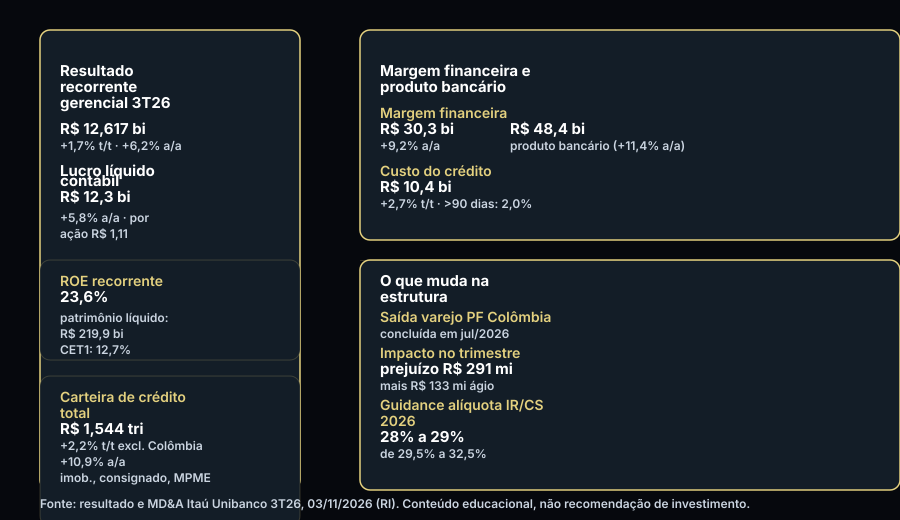

23/11: ITUB4, Itaú e o resultado do 3T26
O Itaú Unibanco divulgou o resultado do terceiro trimestre de 2026 em 3 de novembro: lucro recorrente de R$ 12,6 bilhões (+6,2% em 12 meses), carteira de crédito de R$ 1,5 trilhão e ROE recorrente de 23,6%. A leitura exige separar a solidez da margem financeira da pressão sobre provisões e da receita de serviços, além de avaliar o que o encerramento do varejo de pessoas físicas na Colômbia muda na operação.

Máquina de juros funcionando; o ponto de atenção está na qualidade da receita e na evolução do custo do crédito.
Resposta curta: banco com receita de juros segura; pergunta é o custo de manter esse ritmo
O resultado recorrente gerencial do Itaú no 3T26 foi de R$ 12,617 bilhões, alta de 1,7% sobre o trimestre anterior e de 6,2% em 12 meses; o lucro líquido contábil somou R$ 12,3 bilhões (+5,8% a/a), com lucro por ação de R$ 1,11 contra R$ 1,02 no terceiro trimestre de 2025.[1][2] A margem financeira chegou a R$ 30,3 bilhões (+9,2% a/a) e o produto bancário a R$ 48,4 bilhões (+11,4% a/a).[2]
O ROE recorrente foi de 23,6%, com patrimônio líquido de R$ 219,9 bilhões (+5,5% t/t) e CET1 de 12,7% (+0,4 ponto percentual t/t).[1][3] Do lado do crédito, a carteira total atingiu R$ 1,544 trilhão, alta de 2,2% no trimestre excluindo a operação de varejo da Colômbia, e de 10,9% em 12 meses.[1] A expansão foi puxada por crédito com garantia: imobiliário (+4,4% a/a), consignado (+3,5% a/a) e empréstimos a pequenas e médias empresas (+4,2% a/a).[4]
O que o balanço mostra — receita de juros segura, provisões pressionadas
O ponto positivo é claro: a máquina de juros do Itaú está funcionando. A margem financeira cresceu impulsionada por crédito com garantia e o produto bancário avançou dois dígitos, indicando que a concessão de crédito não está arrefecendo — muito pelo contrário, com foco em linhas de menor risco.[2][4]
O contraponto está no custo do crédito, de R$ 10,4 bilhões no trimestre (+2,7% t/t), e na inadimplência acima de 90 dias, em 2,0% (+0,1 ponto percentual t/t), com normalização nas operações de pequenas e médias empresas.[1][3] Provisões e perdas com crédito subiram na comparação anual, o que é esperado em carteira em expansão, mas exige acompanhamento: se a inadimplência continuar subindo enquanto a carteira cresce, parte do ganho de receita será consumida por cobertura de calotes.[2]
Também pesam itens pontuais: a reestruturação do varejo de pessoas físicas do Itaú Colômbia gerou prejuízo de R$ 291 milhões no trimestre, e houve R$ 133 milhões de amortização de ágio.[2] O resultado de serviços ficou abaixo de estimativas e o de seguros recuou.[3][5]
O que muda na estrutura do banco
Em julho de 2026, o Itaú concluiu a transferência de ativos, passivos e contratos do varejo de pessoas físicas da Colômbia, saindo desse segmento naquele país.[1] A operação simplifica a geografia do banco e concentra a execução no Brasil, mas o trimestre ainda absorveu os custos da saída. Para frente, a comparação anual da carteira deve ser lida com esse ajuste em mente.[1]
A gestão revisou para baixo o guidance da alíquota efetiva de IR e CS de 2026, para o intervalo de 28% a 29% (ante 29,5% a 32,5%).[1][5] É um fato contábil favorável ao lucro líquido, mas não substitui a necessidade de mostrar operação gerando caixa de forma consistente.
Favoráveis e desafios
Favoráveis
• Lucro recorrente +6,2% a/a com ROE recorrente de 23,6%.
• Margem financeira +9,2% a/a e produto bancário +11,4% a/a.
• Crescimento da carteira concentrado em crédito com garantia (imobiliário, consignado, MPME).
• Patrimônio líquido e CET1 (12,7%) em níveis confortáveis.
• Guidance de alíquota de impostos revisado para baixo (28% a 29% em 2026).
Desafios
• Custo do crédito de R$ 10,4 bi (+2,7% t/t) e inadimplência acima de 90 dias em 2,0%.
• Receita de serviços abaixo de estimativa e resultado de seguros em queda.
• Custos da saída do varejo PF da Colômbia (R$ 291 mi de prejuízo no trimestre).
• Receita ainda fortemente dependente do spread de crédito.
O que monitorar nos próximos trimestres
| Ponto | O que acompanhar | Por que importa |
|---|---|---|
| Custo do crédito e inadimplência | evolução das provisões e do NPL acima de 90 dias | mostra se o crescimento da carteira está comprometendo a qualidade do crédito |
| Carteira sem Colômbia | crescimento da carteira no Brasil comparado com períodos anteriores | isola o crescimento orgânico da saída da operação colombiana |
| Serviços e seguros | recuperação ou continuidade da fraqueza nessas linhas | define se a receita se diversifica além do spread de crédito |
| Alíquota de impostos e 4T26 | confirmação da alíquota de 28% a 29% e resultado do quarto trimestre | afeta o lucro líquido contábil reportado do ano |
| Margem com clientes vs. tesouraria | composição da margem financeira entre clientes e operações de mercado | indica se a receita é recursiva com a base ou depende de operações de tesouraria |
Conclusão
A resposta para a pergunta do post é: o Itaú entrega um trimestre operacional sólido, com lucro recorrente, margem e ROE em bons níveis, mas o custo do crédito subindo e a receita de serviços fraca impedem uma leitura sem ressalvas. A saída da Colômbia e o guidance de alíquota são fatos estruturais, não ruído, e devem ser considerados na comparação ano contra ano.
Conteúdo educacional. Não é recomendação personalizada de investimento, compra ou venda de ITUB4 nem de qualquer outro ativo. Ações envolvem risco de mercado, setorial, de crédito, regulação, decisões do controlador e resultados específicos da empresa.
- Itaú Unibanco — resultado e MD&A do 3° trimestre de 2026, divulgado em 03/11/2026 (relações com investidores).
- UOL/Folhapress — lucro do Itaú vai a R$ 12,6 bi no terceiro trimestre, alta de 1,7%, 03/11/2026.
- Infomoney — Itaú (ITUB4) tem lucro líquido de R$ 12,6 bilhões no 3º tri, 03/11/2026.
- Valor Investe — Itaú tem lucro de R$ 12,6 bilhões no 3º trimestre, 03/11/2026.
- XP Investimentos — comentário sobre resultado do Itaú no 3T26, novembro de 2026.